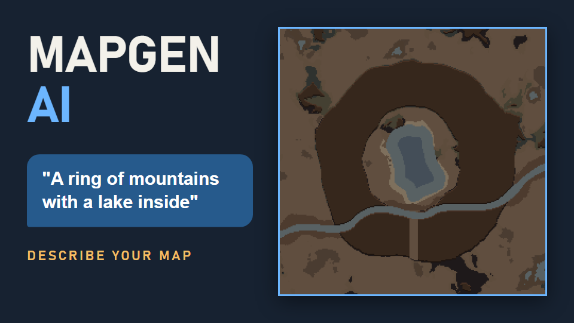

MapGen AI 창작마당 검토
올릴 파일과 새 소개글을 한 화면에 모은 검토용 페이지입니다. 올릴 파일은 모두 upload 폴더에 있습니다. 아래 경로는 이 페이지가 있는 폴더 기준입니다.
1. Imgur에 올린 카드 4장
올리기 끝. 소개글 두 파일에 각 카드의 Imgur 직접 주소를 넣었습니다.
2. 소개글 미리보기
새 빌드를 올리는 날 스팀 웹 페이지의 설명 편집에 붙여 넣습니다. 카드는 소개글에 넣은 Imgur 주소에서 그대로 불러오고, 오른쪽 위에 그 주소를 표시했습니다.
Describe your map. MapGen AI builds it.
Type what you want in plain words, like "a ring of mountains with a lake inside" or "add a small island in the middle of the lake". MapGen AI turns it into map settings, and Map Preview shows the result. Keep chatting to adjust it until the map feels right, then start there.
Built for RimWorld 1.6. Requires Harmony and Map Preview.
Use your own AI: Google Gemini, OpenAI, OpenRouter, DeepSeek, Grok, GLM, Alibaba, a local server such as Ollama or LM Studio, or a custom endpoint.
 https://i.imgur.com/aB4pSxq.png
https://i.imgur.com/aB4pSxq.png https://i.imgur.com/OVg0Gi1.png
https://i.imgur.com/OVg0Gi1.png https://i.imgur.com/6J5waj1.png
https://i.imgur.com/6J5waj1.pngWhat's new in this update
- Edits keep what you built. Add a lake, then move it, resize it, or change only its outline. Earlier changes stay, and Undo steps back one request at a time.
- Map ideas with pictures. Ask for suggestions and get up to three candidates drawn by Map Preview. Refine one, like "make option 2 more natural", before you pick. Your map does not change until you choose.
- Preference questions. Not sure what you want? Answer a few multiple-choice questions first. They run on your PC and make no AI calls.
- Exact or natural shapes. Ask for a perfect circle, or for a natural lake with an uneven shore.
- Fill part of an area. "Fill 70% of the ring's interior with rich soil." Lava fills are available with Odyssey.
- Place ruins and ancient dangers by area, direction, or landmark, such as on an island or at the foot of a mountain. Ancient dangers use the game's own generator.
- Local roads with bridges. Roads that cross a river or shallow water get wooden bridges automatically.
- Natural water. Natural lakes you add now follow the game's own lake style, with shallow edges and lakeshore ground that suits the biome.
 https://i.imgur.com/fQrAxnM.png
https://i.imgur.com/fQrAxnM.pngHow to start
- Subscribe to MapGen AI, Harmony, and Map Preview.
- Open Options > Mod settings > MapGen AI. Pick a provider, enter your API key, and choose a model.
- On the world map, select a tile and click ✦ AI Map Gen next to Map Preview.
- Type a request, or press Quick suggestions or Find my preferences.
- When the preview looks right, press Generate with these settings. The settings apply when you start or settle on that tile.
Example requests
- "A ring of mountains with a lake inside and one opening to the south."
- "Add a small island in the middle of the lake."
- "Move the island to the north side of the lake." / "Make the river straight."
- "Fill 70% of the ring's interior with rich soil."
- "Put two small ruins on the island."
- "Add a dirt road from the west edge to the east edge."
- "Add hot springs." (Odyssey)
- "Put the coast on the north side."
- "Recommend a map." / "Make option 2 more natural."
Good to know
- It shapes the map you are about to start. It does not edit a colony map you are already playing.
- World rivers and coasts stay connected. You can straighten a river or turn a coast, but you cannot delete them or add a coast inland.
- Map Preview shows terrain and layout. Plants, building interiors, and loot appear when the real map is generated.
- Results depend on the model. Check the preview, and use Undo or Reset when a request goes wrong.
- DLC and landmark mods: you can add hot springs, fjords, oasis, and other tile features when the DLC or mod is active and the tile allows them.
- Cost and privacy: each message is a request to the provider you chose, paid with your own key. A few actions add a request, such as summarizing a long chat or re-asking when a reply comes back malformed. Your key is saved in your RimWorld mod settings on your PC.
- Languages: menus in English, Korean, Japanese, and Simplified Chinese. Some newer messages appear in English for Japanese and Chinese.
- Image input is paused in this version.
- Presets: Save and Load keep map settings you want to reuse.
Credits
Created by Choco with assistance from Claude and ChatGPT.
The multi-provider settings UI was inspired by RimTalk. If you enjoy AI-powered mods, give it a try. It lets your colonists have AI-driven conversations.
원하는 맵을 말하면, MapGen AI가 만들어 줍니다.
"가운데 호수를 품은 고리 모양 산", "호수 한가운데에 작은 섬을 넣어 줘"처럼 평소 말로 입력하세요. MapGen AI가 맵 설정으로 바꾸고, Map Preview가 결과를 바로 보여 줍니다. 마음에 들 때까지 대화로 다듬은 뒤 그 자리에서 시작하면 됩니다.
RimWorld 1.6용입니다. Harmony와 Map Preview가 필요합니다.
AI는 직접 고릅니다: Google Gemini, OpenAI, OpenRouter, DeepSeek, Grok, GLM, Alibaba, Ollama·LM Studio 같은 로컬 서버, 직접 지정한 주소를 쓸 수 있습니다.
https://i.imgur.com/aB4pSxq.pnghttps://i.imgur.com/OVg0Gi1.pnghttps://i.imgur.com/6J5waj1.png이번 업데이트에서 달라진 점
- 앞서 만든 지형이 유지됩니다. 호수를 만든 뒤 옮기거나, 크기만 바꾸거나, 물가 모양만 바꿀 수 있습니다. 앞선 변경은 그대로 남고, 되돌리기는 요청 하나씩 뒤로 돌아갑니다.
- 그림으로 보는 추천. 추천을 요청하면 Map Preview로 그린 후보를 최대 3개까지 보여 줍니다. 고르기 전에 "2번을 더 자연스럽게"처럼 다듬을 수 있고, 직접 선택하기 전까지 맵은 바뀌지 않습니다.
- 취향 문답. 무엇을 원하는지 막막하면 객관식 질문 몇 개에 먼저 답해 보세요. 질문은 PC 안에서 진행되고 AI를 호출하지 않습니다.
- 정확한 도형과 자연스러운 모양. 완벽한 원형도, 물가가 울퉁불퉁한 자연스러운 호수도 요청할 수 있습니다.
- 영역의 일부만 채우기. "고리 안쪽의 70%만 비옥한 토양으로" 같은 요청이 됩니다. 용암 채우기는 Odyssey가 있을 때 쓸 수 있습니다.
- 폐허와 고대 위협 배치. 섬 안, 산기슭처럼 영역·방향·지형을 기준으로 놓을 수 있습니다. 고대 위협은 게임 기본 생성기로 만듭니다.
- 다리가 놓이는 지역 도로. 강이나 얕은 물을 건너는 구간에는 나무 다리가 자동으로 놓입니다.
- 자연스러운 물. 새로 추가하는 자연 호수는 게임 기본 호수처럼 얕은 가장자리와 바이옴에 맞는 호숫가 바닥을 갖습니다.
https://i.imgur.com/fQrAxnM.png시작하는 방법
- MapGen AI, Harmony, Map Preview를 구독합니다.
- 모드 설정 > MapGen AI에서 공급자를 고르고 API 키와 모델을 입력합니다.
- 월드맵에서 타일을 고르고 Map Preview 옆의 ✦ AI 맵 생성 버튼을 누릅니다.
- 원하는 맵을 입력하거나 바로 추천받기 또는 취향에 맞춰 추천받기를 누릅니다.
- 미리보기가 마음에 들면 이 설정으로 맵 생성을 누릅니다. 그 타일에서 시작하거나 정착할 때 이 설정이 적용됩니다.
요청 예시
- "가운데에 호수를 품은 고리 모양 산을 만들고, 남쪽으로 출구 하나를 내 줘."
- "호수 한가운데에 작은 섬을 넣어 줘."
- "섬을 호수 북쪽으로 옮겨 줘." / "강을 곧게 펴 줘."
- "고리 안쪽의 70%만 비옥한 토양으로 채워 줘."
- "섬 안에 작은 폐허 두 개를 놓아 줘."
- "맵 서쪽 끝에서 동쪽 끝까지 흙길을 내 줘."
- "온천을 추가해 줘." (Odyssey)
- "해안을 북쪽으로 바꿔 줘."
- "그냥 추천해 줘." / "2번을 더 자연스럽게 해 줘."
알아 두면 좋은 점
- 새로 시작할 맵을 만드는 모드입니다. 이미 플레이 중인 정착지 맵을 고치지는 않습니다.
- 월드의 강과 해안 연결은 유지됩니다. 강을 곧게 펴거나 해안 방향을 바꿀 수는 있지만, 강·해안을 없애거나 내륙에 해안을 만들 수는 없습니다.
- Map Preview는 지형과 배치를 보여 줍니다. 식물, 건물 내부, 전리품은 실제 맵을 생성할 때 나타납니다.
- 결과는 모델에 따라 달라집니다. 미리보기로 확인하고, 잘못되면 되돌리기나 초기화를 쓰세요.
- DLC와 랜드마크 모드: 해당 DLC나 모드가 켜져 있고 타일 조건이 맞으면 온천, 피오르드, 오아시스 같은 지형 특징을 추가할 수 있습니다.
- 비용과 개인정보: 메시지 하나가 내가 고른 공급자에 내 키로 보내는 요청 하나입니다. 긴 대화를 요약하거나 형식이 깨진 답을 다시 받을 때처럼 요청이 하나 더 드는 경우가 있습니다. API 키는 내 PC의 RimWorld 모드 설정에 저장됩니다.
- 언어: 메뉴는 영어, 한국어, 일본어, 중국어(간체)를 지원합니다. 일본어와 중국어에서는 새로 추가된 일부 안내가 영어로 나옵니다.
- 이미지 입력은 이번 버전에서 잠시 꺼 두었습니다.
- 프리셋: 저장·불러오기로 자주 쓰는 맵 설정을 다시 쓸 수 있습니다.
만든 사람
Choco가 Claude와 ChatGPT의 도움을 받아 만들었습니다.
여러 AI 공급자를 고르는 설정 화면은 RimTalk에서 영감을 받았습니다. AI 모드를 좋아한다면 정착민이 AI로 대화하는 RimTalk도 한번 써 보세요.
3. 스팀 갤러리 사진 4장
새 빌드를 올리는 날 스팀 페이지의 이미지·영상 추가 편집에서 옛 스크린샷 대신 올립니다.

4. 표지
직접 올리지 않습니다. 일반판으로 승격할 때 모드의 About 폴더 Preview.png로 들어가고, 게임 업로더가 표지로 씁니다.

5. 영상 시안 76초
순서와 자막을 확인하는 시안입니다. 실제 캡처 정지 화면으로 만들었고, 확정하면 움직이는 녹화로 바꿔 YouTube에 올립니다.
이번 확인 결과
- 온천을 더하기 전후로 강물 칸의 위치가 한 칸도 바뀌지 않았습니다.
- 영어 화면의 대화 문구에 한국어가 나오지 않았습니다.
- 강을 북쪽으로 옮기는 요청은 여전히 실패해서, 소개글에서 강 위치를 옮긴다는 문구를 뺐습니다.
판정 전체: captures/showcase-02/basic-checks.md